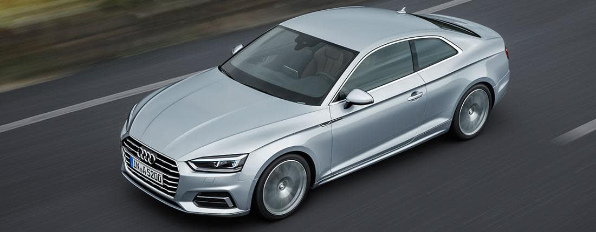
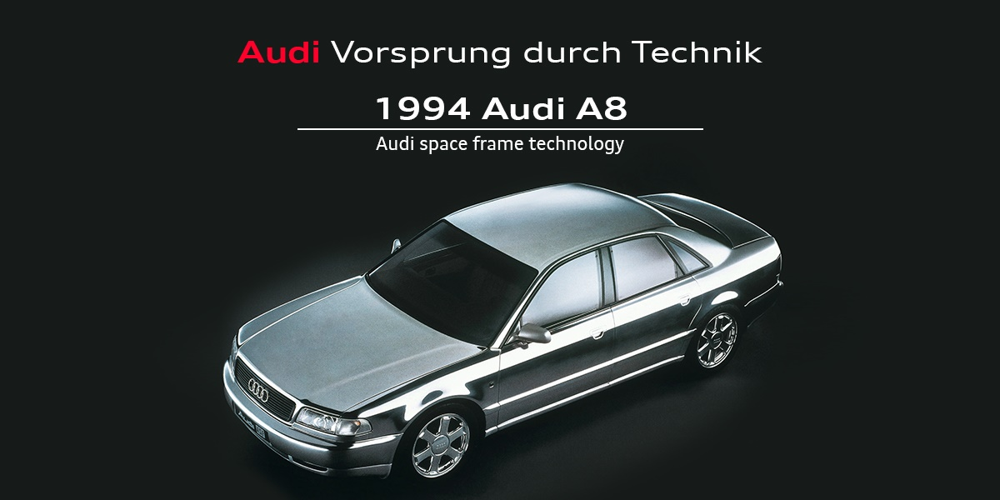
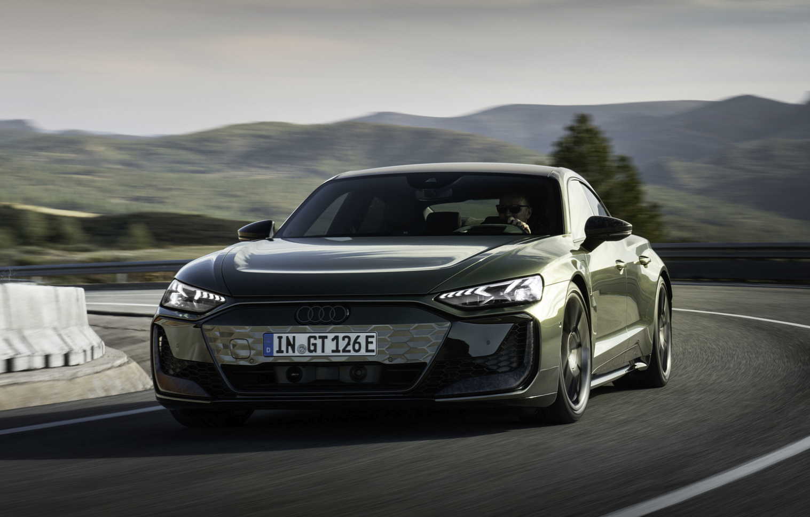

История и философия на марката

Audi е една от най-разпознаваемите и престижни автомобилни марки в света. Компанията е основана през 1909 г. от Аугуст Хорх в Германия и е символ на качество, иновации и технологичен напредък.
Името Audi произлиза от латинския превод на фамилията Horch и означава „слушай“. Логото на марката – четирите преплетени пръстена – символизира обединението на четири автомобилни компании: Audi, DKW, Horch и Wanderer.
Vorsprung durch Technik

Мотото на Audi – „Vorsprung durch Technik“ (Преднина чрез техника) – отразява стремежа на марката към непрекъснати иновации.
- Система за задвижване на всички колела quattro
- Модерни и икономични TFSI двигатели
- Електрическа мобилност чрез серията Audi e-tron
Audi днес

Днес Audi е част от Volkswagen Group и предлага широка гама автомобили – от компактни градски модели до луксозни седани и мощни SUV автомобили.
Марката успешно съчетава спортен дух, лукс и иновативни технологии, което я прави предпочитан избор за милиони клиенти по целия свят.
Audi не просто създава автомобили – тя създава изживяване, насочено към бъдещето на мобилността.